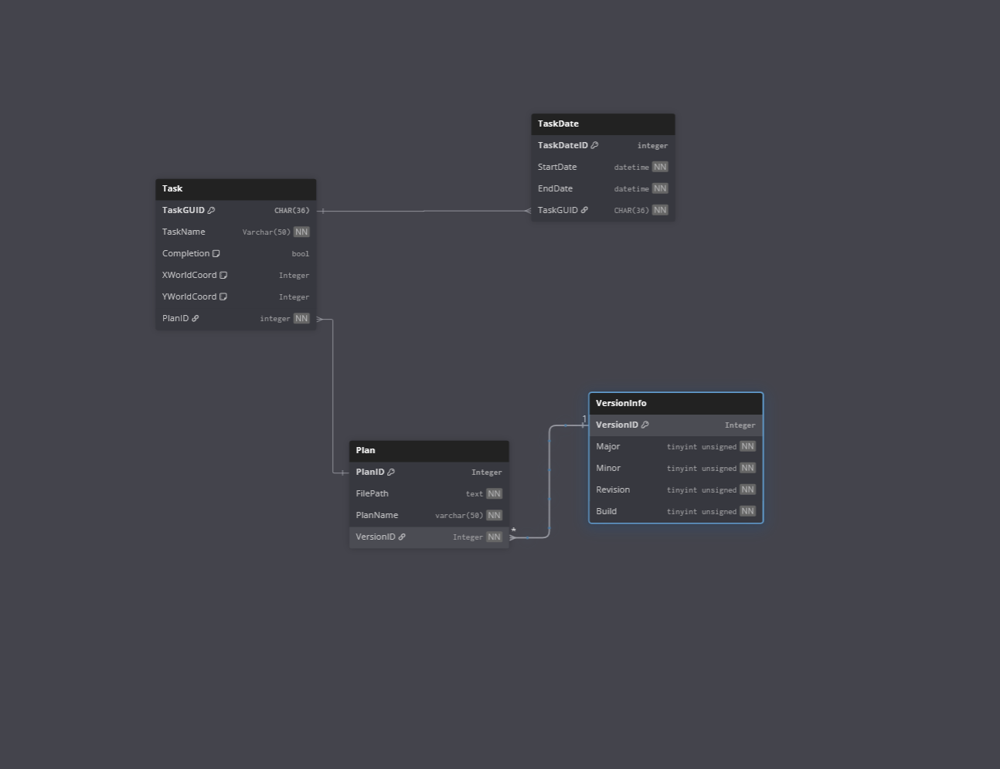

Create a program capable of replacing my paper planner
Learn software development and at least one tool, framework, or library, that I can use during my honors research to create a tool which I can use.
Design
I started designing for this project halfway through sophomore year. I created a mock up of what I had been envisioning at the time in google slides.
I wanted to be able to create a file - referred to as a plan - in which I could break down my tasks into smaller and smaller parts.
Ex: I might have needed to work on a project - rather than writing "work on project" into my planner, I could break down each part of what I had to do in this program.
Each plan needed to be able to display tasks, which could hold subitems. These subitems could be themselves tasks, images, or link to other plans
I wanted to be able to display multiple plans at once.
I planned to store plans in XML, as I had worked with it while making mods for BG3.
Though I began programming at this time, I didn't get much done; school work and other obligations took much of my attention, and what I had left was spent on learning WPF
Late in the summer before Junior year, I became inspired and began planning once more. The general idea remained the same, but I also added a bit more to it.
The major new idea I had was that of the calendar: I wanted to be able to display tasks that needed to be done within a certain time frame.
The goal was not for this program to fill the role of a schedule. I just realized I could not effectively plan dealing with tasks if I didn't take time factors into account
To store the data related to tasks that had to be completed in/by a time frame, I decided to use an SQLite database.
For the database, I'm trying to apply knowledge that I learned in my databases class this past semester. I'm trying to create the database in third-normal-form to avoid redundant data
To do this, I have a table for the version info, a table for the plans, a table for tasks, and then a table for the dates tied to the tasks. This way, I'm not duplicating data if a task has multiple durations, or if there are multiple time sensetive tasks in one plan.

Learning Process
One of the most important things for me about this project is to learn Software development. Every line of code used, I have typed manually, rather than simple copy-pasting, so I can ensure I understand how it works and what it does.
As I wanted to learn Software Development, I am trying to stick to the model-view-viewmodel programming pattern for the main functionality.
I have avoided the use of LLM written code when working on this project; with the breaks I take due to my workload, I want to make sure I understand the code I write and why I wrote it.
If I get stuck on a syntax issue or code issue, I work until I figure it out, and I sometimes google the problem. Code documentation and stack overflow have been very helpful.
When I figure out the answer, I note what the answer was or where I found it in a comment, so if I ever want to return to it, I can.
If I need help for the software's design, or code-relationship issue, I seek advice from a professor of mine.
If I need help about the database, I seek advice from my databases professor.
User Interface
The UI right now is admittedly not the best. I have tried to make it look similar to a paper planner, though.
There is a black rectangle on the left, where I would put a spiral - like it's spiral bound. There are tabs on the right (denoting calendars, and plans), like you'd have tabs for months of the year
Data flow
Only the main-window view model class can access the sqlite database.
The main window view model "tells" everything else what to do.
The tasks, plans, and sub-items should not need a reference to the main-window-view model instance, or to any other plans in active memory.
The calendars should not need to access the plans when they are in active memory.
If I do things right, the tasks displayed in the calendar should be cached, so that the program doesn't need to go to the database as often to fetch them.
Next Goals
The end of this semester has dramatically limited how much work I can do, so I hope to pick this project back up over winter break.
I want to transition the view models for the plans, tasks, text (larger text box sub-items, without checkboxes or subitems of their own), and dates to be more event based, to reduce the coupling between classes that is present in the code as it currently stands.
I want to have multiple plans open at once.
I want to be able to pan the "camera" around the plans